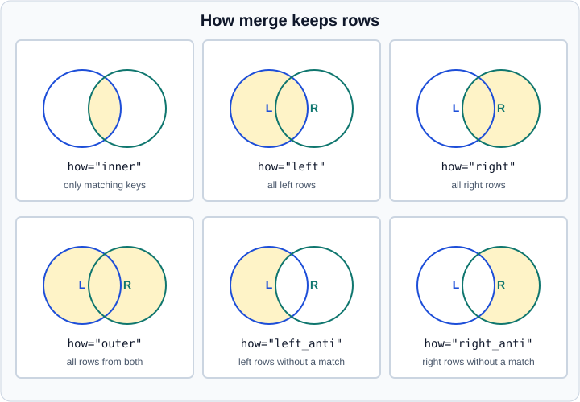

Merge & Join in pandas
|
This content was generated with the assistance of AI and should be verified against the official documentation before being relied on in production. |
Combining two tables on the values of one or more key columns is the pandas counterpart of a SQL JOIN. This page
documents pandas.merge, DataFrame.merge, DataFrame.join, the ordered variants merge_asof and merge_ordered,
and the helpers compare and combine_first. It targets pandas 3.1 on Python 3.13 or 3.14 and was checked in October
2026. Every example was run with Python 3.13, NumPy 2.5.4 and pandas 3.1.0, and the printed output is the real output.
Stacking frames along an axis without matching keys is a different operation, described in
Concatenation. If you think in SQL, the mapping is in
Coming from SQL; for the SQL side of the same operations see
SQL queries.
All examples assume the standard import:
import pandas as pdmerge or join or concat
-
pd.merge(left, right, ...)andleft.merge(right, ...)are the same function. They match rows on key columns, on the index, or on a mix of both. -
left.join(right)is a convenience wrapper overmergewhose defaults are to match on the index ofrightand to usehow="left". It can also take a list of frames. -
pd.concat([a, b])does not look at keys at all; it aligns on the index (or the columns) and stacks.
The usual rule is: use merge when the key is a column, join when both frames are already indexed by the key, and
concat when the frames describe the same kind of rows or the same rows with different columns.
The basic merge
The two frames below describe customers and orders. Customer 2 and 4 have no order, and order 13 belongs to a customer
that does not exist in customers.
customers = pd.DataFrame({"customer_id": [1, 2, 3, 4], "name": ["Ana", "Ben", "Cleo", "Dev"]})
orders = pd.DataFrame({"order_id": [10, 11, 12, 13], "customer_id": [1, 1, 3, 5], "amount": [25.0, 40.0, 15.5, 99.0]})
for how in ["inner", "left", "right", "outer", "left_anti", "right_anti"]:
print("---", how)
print(customers.merge(orders, on="customer_id", how=how))Output:
--- inner
customer_id name order_id amount
0 1 Ana 10 25.0
1 1 Ana 11 40.0
2 3 Cleo 12 15.5
--- left
customer_id name order_id amount
0 1 Ana 10.0 25.0
1 1 Ana 11.0 40.0
2 2 Ben NaN NaN
3 3 Cleo 12.0 15.5
4 4 Dev NaN NaN
--- right
customer_id name order_id amount
0 1 Ana 10 25.0
1 1 Ana 11 40.0
2 3 Cleo 12 15.5
3 5 NaN 13 99.0
--- outer
customer_id name order_id amount
0 1 Ana 10.0 25.0
1 1 Ana 11.0 40.0
2 2 Ben NaN NaN
3 3 Cleo 12.0 15.5
4 4 Dev NaN NaN
5 5 NaN 13.0 99.0
--- left_anti
customer_id name order_id amount
2 2 Ben NaN NaN
4 4 Dev NaN NaN
--- right_anti
customer_id name order_id amount
3 5 NaN 13 99.0The figure summarises what each how value keeps. The blue circle is the left frame and the green circle is the right
frame; the shaded area is what the result contains.

The how values
how |
Rows kept | Notes |
|---|---|---|
|
Only keys present in both frames. |
Column order is the key, the left columns, then the right columns. Rows keep the order of the left keys. |
|
Every row of the left frame; unmatched right values become missing. |
Integer columns of the right frame become floating point when a missing value has to be stored, as |
|
Every row of the right frame. |
The mirror image of |
|
The union of the keys. |
Keys are sorted lexicographically, as the reference documents. |
|
The Cartesian product of both frames. |
Takes no key ( |
|
Left rows that have no match in the right frame. |
New in pandas 3.0. The right-hand columns are present but missing. |
|
Right rows that have no match in the left frame. |
New in pandas 3.0. |
Before pandas 3.0 an anti-join had to be written with an outer merge, the indicator column and a filter, or with
isin. The two anti values replace that idiom. The output above shows that the anti result still carries the columns
of the other frame, filled with missing values; select the columns you need afterwards.
Cross join
A cross join pairs every row of one frame with every row of the other. It is the right tool to enumerate combinations, and the wrong one to join on a key.
sizes = pd.DataFrame({"size": ["S", "M"]})
colors = pd.DataFrame({"color": ["red", "blue"]})
print(sizes.merge(colors, how="cross")) size color
0 S red
1 S blue
2 M red
3 M blueSource: pandas.merge.
Choosing the keys
| Argument | Meaning |
|---|---|
|
A column name or list of names that exists in both frames. The key columns appear once in the result. |
|
Different key names in each frame. Both key columns stay in the result. |
|
Use the index of that frame as the key. Combine them with |
|
Two strings appended to overlapping non-key column names. The default is |
|
Sort the result lexicographically by the join keys. The default is |
|
Check the key cardinality and raise |
|
Add a column that records where each row came from. |
When the key names differ, both key columns are kept, and overlapping value columns get suffixes:
left = pd.DataFrame({"id": [1, 2, 3], "value": [10, 20, 30]})
right = pd.DataFrame({"key": [1, 2, 4], "value": [100, 200, 400]})
print(left.merge(right, left_on="id", right_on="key"))
print(left.merge(right, left_on="id", right_on="key", suffixes=("_l", "_r"))) id value_x key value_y
0 1 10 1 100
1 2 20 2 200
id value_l key value_r
0 1 10 1 100
1 2 20 2 200Source: DataFrame.merge.
Several keys are given as a list; a row must match on all of them:
x = pd.DataFrame({"y": [2025, 2025, 2026], "m": [1, 2, 1], "v": [1, 2, 3]})
z = pd.DataFrame({"y": [2025, 2026], "m": [2, 1], "w": ["a", "b"]})
print(x.merge(z, on=["y", "m"], how="left")) y m v w
0 2025 1 1 NaN
1 2025 2 2 a
2 2026 1 3 bSource: DataFrame.merge.
Merging on the index
An index is a key like any other. With both left_index=True and right_index=True the result keeps the shared index:
a = pd.DataFrame({"x": [1, 2, 3]}, index=pd.Index(["a", "b", "c"], name="k"))
b = pd.DataFrame({"y": [10, 20, 30]}, index=pd.Index(["b", "c", "d"], name="k"))
print(a.merge(b, left_index=True, right_index=True, how="outer")) x y
k
a 1.0 NaN
b 2.0 10.0
c 3.0 20.0
d NaN 30.0Source: pandas.DataFrame.merge.
A merge that uses columns on both sides discards the index of both frames and returns a fresh RangeIndex; a merge that
uses the index on one side keeps the index of the other side’s rows. When the keys live in a MultiIndex, name the
levels in on= and pandas mixes level names and column names. See MultiIndex.
idx = pd.MultiIndex.from_tuples([(2025, 1), (2025, 2)], names=["y", "m"])
q = pd.DataFrame({"u": [5, 6]}, index=idx)
print(x.merge(q, on=["y", "m"]))
print(x.merge(q, left_on=["y", "m"], right_index=True, how="left")) y m v u
0 2025 1 1 5
1 2025 2 2 6
y m v u
0 2025 1 1 5.0
1 2025 2 2 6.0
2 2026 1 3 NaNSource: pandas.DataFrame.merge.
DataFrame.join
join merges on the index of the other frame. Its default is a left join, and it can take a column of the caller with
on=:
t = pd.DataFrame({"k": ["b", "c", "z"], "v": [1, 2, 3]})
print(a.join(b, how="left"))
print(t.join(b, on="k")) x y
k
a 1 NaN
b 2 10.0
c 3 20.0
k v y
0 b 1 10.0
1 c 2 20.0
2 z 3 NaNSource: DataFrame.join.
A list of frames is joined in one call, which is faster and clearer than a chain of join calls. Every frame in the list
must have a non-overlapping set of column names:
c = pd.DataFrame({"z": [7, 8]}, index=pd.Index(["a", "c"], name="k"))
print(a.join([b, c], how="outer")) x y z
k
a 1.0 NaN 7.0
b 2.0 10.0 NaN
c 3.0 20.0 8.0
d NaN 30.0 NaNIn pandas 3.1 the lsuffix and rsuffix keywords of DataFrame.join are deprecated; the call emits a warning that
points to the suffixes keyword. Use suffixes=("_a", "_b") in new code. The copy keyword of merge and join is
also deprecated, because Copy-on-Write makes the copy lazy; call .copy() on the result when you need an eager copy (see
Copy-on-Write).
Source: DataFrame.join.
Key cardinality and validate
A merge multiplies rows when a key repeats on both sides. Customer 1 has two orders, so the customer row is repeated
twice. When both sides repeat a key the result has m x n rows for that key; with three occurrences against two this
silently produces six:
m1 = pd.DataFrame({"k": ["a", "a"], "x": [1, 2]})
m2 = pd.DataFrame({"k": ["a", "a", "a"], "y": [1, 2, 3]})
print(len(m1.merge(m2, on="k")))6Source: pandas.DataFrame.merge.
The validate argument turns that surprise into an error. The accepted values are "one_to_one" ("1:1"),
"one_to_many" ("1:m"), "many_to_one" ("m:1") and "many_to_many" ("m:m", which only documents the intent):
try:
orders.merge(customers, on="customer_id", validate="one_to_one")
except pd.errors.MergeError as err:
print("MergeError:", err)
dup = pd.concat([customers, customers.iloc[[0]]])
try:
orders.merge(dup, on="customer_id", validate="m:1")
except pd.errors.MergeError as err:
print("MergeError:", err)MergeError: Merge keys are not unique in left dataset; not a one-to-one merge
Duplicates in left:
customer_id
1 ...
MergeError: Merge keys are not unique in right dataset; not a many-to-one merge
Duplicates in right:
customer_id
1 ...Source: pandas.DataFrame.merge.
Write validate= on every merge whose result row count matters. A cheap complement is to compare len() before and
after.
Tracing the origin of rows with indicator
indicator=True adds a _merge column with the categories left_only, right_only and both; a string names the
column instead:
print(customers.merge(orders, on="customer_id", how="outer", indicator=True))
print(customers.merge(orders, on="customer_id", how="outer", indicator="source")["source"].value_counts()) customer_id name order_id amount _merge
0 1 Ana 10.0 25.0 both
1 1 Ana 11.0 40.0 both
2 2 Ben NaN NaN left_only
3 3 Cleo 12.0 15.5 both
4 4 Dev NaN NaN left_only
5 5 NaN 13.0 99.0 right_only
source
both 3
left_only 2
right_only 1
Name: count, dtype: int64Source: pandas.DataFrame.merge.
Use it to audit a join, for example to assert that no right_only rows exist. It also covers the pre-3.0 way of building
an anti-join.
Pitfalls
Key dtypes must be compatible
Merging a string key against an integer key raises instead of guessing:
s = pd.DataFrame({"k": ["1", "2"], "a": [1, 2]})
n = pd.DataFrame({"k": [1, 2], "b": [3, 4]})
try:
s.merge(n, on="k")
except ValueError as err:
print("ValueError:", err)
print(s.astype({"k": "int64"}).merge(n, on="k"))ValueError: You are trying to merge on str and int64 columns for key 'k'. If you wish to proceed you should use pd.concat
k a b
0 1 1 3
1 2 2 4Source: pandas.DataFrame.merge.
The message names str, the default string dtype of pandas 3 (see
Text Data & the str Dtype). Convert one side first. Key columns
read from a CSV file often differ from the same key read from a database, so check dtypes before joining.
Missing keys match each other
Unlike SQL, pandas matches a missing key in the left frame with a missing key in the right frame:
l = pd.DataFrame({"k": [1.0, None], "a": [1, 2]})
r = pd.DataFrame({"k": [None, 2.0], "b": [3, 4]})
print(l.merge(r, on="k")) k a b
0 NaN 2 3Source: pandas.DataFrame.merge.
Drop or fill missing keys before merging when that is not the behaviour you want (see Missing Data).
Row order and the index
A merge does not promise to preserve the order of either frame except where the reference documents it (inner and
left keep the left key order, outer sorts the keys). Do not rely on position after a merge; sort explicitly. The
resulting index is a new RangeIndex whenever columns were used as keys, so any index label of the inputs is lost: call
reset_index() first if the label is data.
Ordered merges
merge_asof: nearest-key matches
pd.merge_asof is a left join that matches each left row with the last right row whose key is less than or equal to
it (direction="backward", the default), instead of requiring equality. Both frames must be sorted by the key. The
typical use is joining a stream of events with the latest known state, such as trades and quotes:
trades = pd.DataFrame({
"time": pd.to_datetime(["2026-10-01 09:30:00.023", "2026-10-01 09:30:00.038", "2026-10-01 09:30:00.048",
"2026-10-01 09:30:00.048", "2026-10-01 09:30:00.048"]),
"ticker": ["MSFT", "MSFT", "GOOG", "AAPL", "MSFT"],
"qty": [100, 75, 100, 100, 100]})
quotes = pd.DataFrame({
"time": pd.to_datetime(["2026-10-01 09:30:00.023", "2026-10-01 09:30:00.023", "2026-10-01 09:30:00.030",
"2026-10-01 09:30:00.041", "2026-10-01 09:30:00.048"]),
"ticker": ["GOOG", "MSFT", "MSFT", "MSFT", "GOOG"],
"bid": [720.5, 51.95, 51.97, 51.99, 720.5]})
print(pd.merge_asof(trades, quotes, on="time", by="ticker")) time ticker qty bid
0 2026-10-01 09:30:00.023 MSFT 100 51.95
1 2026-10-01 09:30:00.038 MSFT 75 51.97
2 2026-10-01 09:30:00.048 GOOG 100 720.50
3 2026-10-01 09:30:00.048 AAPL 100 NaN
4 2026-10-01 09:30:00.048 MSFT 100 51.99Source: pandas.merge_asof.
by= restricts matches to the same group (here the same ticker). tolerance= bounds how far away a match may be, and
allow_exact_matches=False excludes equal keys:
print(pd.merge_asof(trades, quotes, on="time", by="ticker",
tolerance=pd.Timedelta("10ms"), allow_exact_matches=False))
print(pd.merge_asof(trades, quotes, on="time", by="ticker", direction="nearest")) time ticker qty bid
0 2026-10-01 09:30:00.023 MSFT 100 NaN
1 2026-10-01 09:30:00.038 MSFT 75 51.97
2 2026-10-01 09:30:00.048 GOOG 100 NaN
3 2026-10-01 09:30:00.048 AAPL 100 NaN
4 2026-10-01 09:30:00.048 MSFT 100 51.99
time ticker qty bid
0 2026-10-01 09:30:00.023 MSFT 100 51.95
1 2026-10-01 09:30:00.038 MSFT 75 51.99
2 2026-10-01 09:30:00.048 GOOG 100 720.50
3 2026-10-01 09:30:00.048 AAPL 100 NaN
4 2026-10-01 09:30:00.048 MSFT 100 51.99The keys must have the same dtype, including the resolution of datetimes. pandas 3 infers microsecond resolution
(datetime64[us]) for datetimes created from strings, so mixing them with nanosecond data from older code needs an
explicit astype. The direction values are "backward", "forward" and "nearest".
Source: pandas.merge_asof.
merge_ordered: ordered outer joins
pd.merge_ordered is an outer join that sorts the result by the key and can fill gaps with fill_method="ffill". It is
useful for time series where the union of keys must stay ordered:
p = pd.DataFrame({"k": ["a", "c", "e"], "lv": [1, 2, 3]})
q2 = pd.DataFrame({"k": ["a", "b", "c", "d"], "rv": [1, 2, 3, 4]})
print(pd.merge_ordered(p, q2, on="k", how="outer")) k lv rv
0 a 1.0 1.0
1 b NaN 2.0
2 c 2.0 3.0
3 d NaN 4.0
4 e 3.0 NaNSource: pandas.merge_ordered.
Comparing and patching frames
DataFrame.compare shows the cells that differ between two frames with identical labels. Rows and columns that are
equal are dropped:
d1 = pd.DataFrame({"a": [1, 2, 3], "b": ["x", "y", "z"]})
d2 = pd.DataFrame({"a": [1, 5, 3], "b": ["x", "y", "q"]})
print(d1.compare(d2))
print(d1.compare(d2, align_axis=0, keep_equal=True)) a b
self other self other
1 2.0 5.0 NaN NaN
2 NaN NaN z q
a b
1 self 2 y
other 5 y
2 self 3 z
other 3 qSource: DataFrame.compare and DataFrame.combine_first.
DataFrame.combine_first fills the holes of one frame from another, aligning on the index and the columns:
s1 = pd.DataFrame({"a": [1, None, 3]})
s2 = pd.DataFrame({"a": [10, 20, 30]})
print(s1.combine_first(s2)) a
0 1.0
1 20.0
2 3.0Source: DataFrame.compare and DataFrame.combine_first.
Older tutorials and books
| Older statement | Current state (pandas 3.1, October 2026) |
|---|---|
|
|
An anti-join needs an outer merge, a filter on |
|
|
The |
|
The keywords are deprecated in pandas 3.1; pass |
The R and tidyverse equivalents (left_join, anti_join) are described in
Tidyverse and dplyr. The reshaping operations that usually
precede or follow a join are in Pivot & Pivot Tables and
Melt, Stack & Explode; grouped aggregation of a merged table is in
Group By.